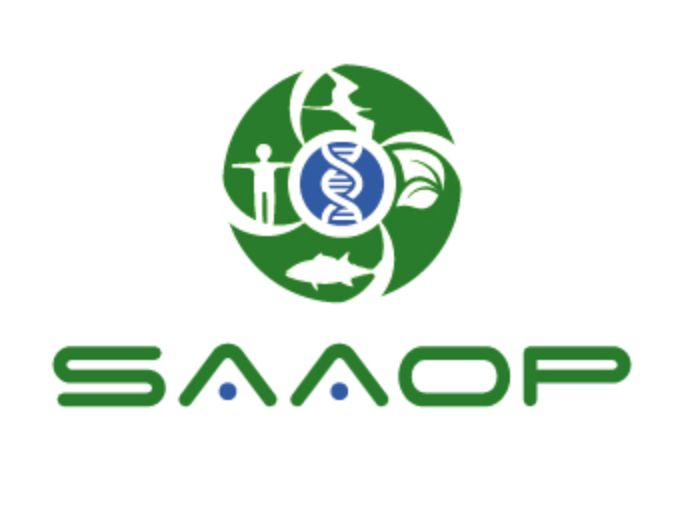

The purpose of SAAOP is to promote and advance scientific research that fosters the development and use of adverse outcome pathways. An adverse outcome pathway (AOP) is a conceptual framework that portrays existing knowledge concerning the linkage between a direct molecular initiating event and an adverse outcome, at a level of biological organization relevant to risk assessment. Information can be derived from in vitro, in vivo, or computational systems. AOPs allow scientists to connect results from the use of in-vitro tools and rapid screening protocols to actual adverse outcomes. The SAAOP maintains the AOPWiki to provide a tool for the development, presentation and discussion of adverse outcome pathways.
